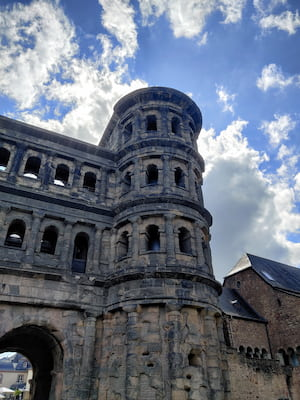

Trier, Germany’s oldest city, is a hidden gem along the Moselle River that blends ancient history with charming modern life. Founded by the Romans over 2,000 years ago, Trier is home to remarkably preserved landmarks like the Porta Nigra, the Roman Amphitheater, and stunning Imperial Baths. Visitors can explore its UNESCO World Heritage Sites, stroll through the lively Hauptmarkt with its colorful medieval buildings, and enjoy the region’s renowned Moselle wines. Trier offers the rare chance to walk through layers of history while still soaking up the relaxed, scenic atmosphere of a small German city — making it a must-visit destination for history lovers, culture seekers, and casual travelers alike.
